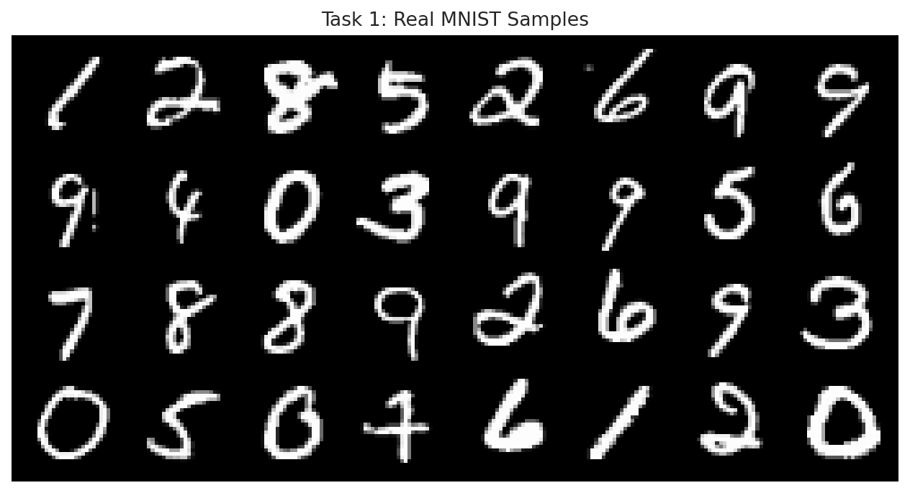
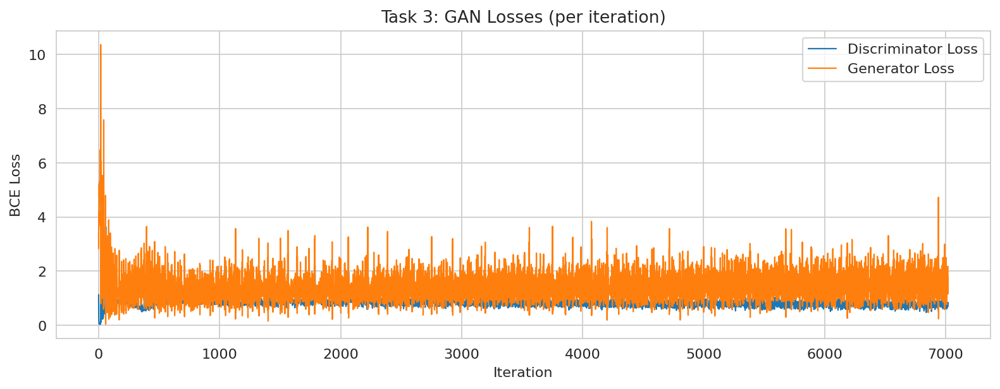
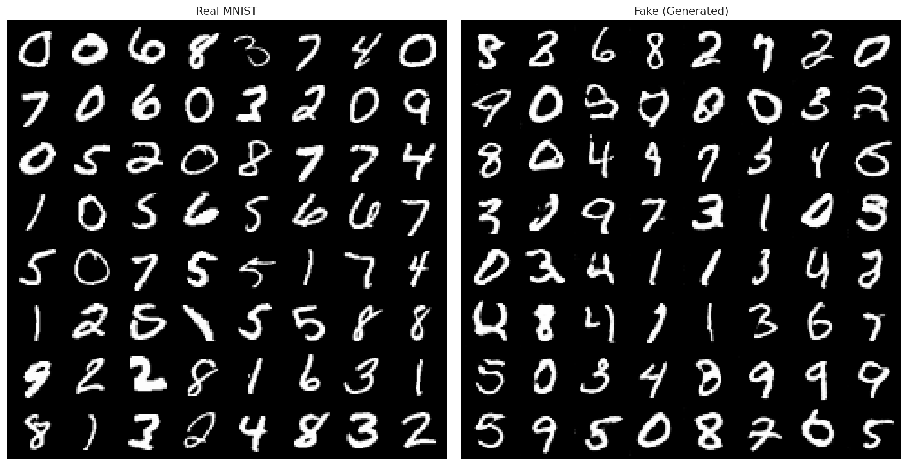
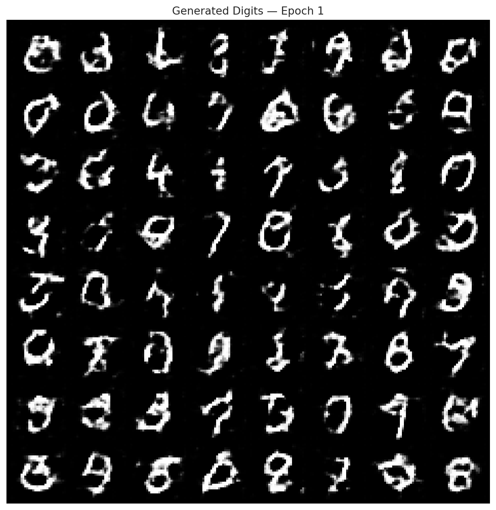
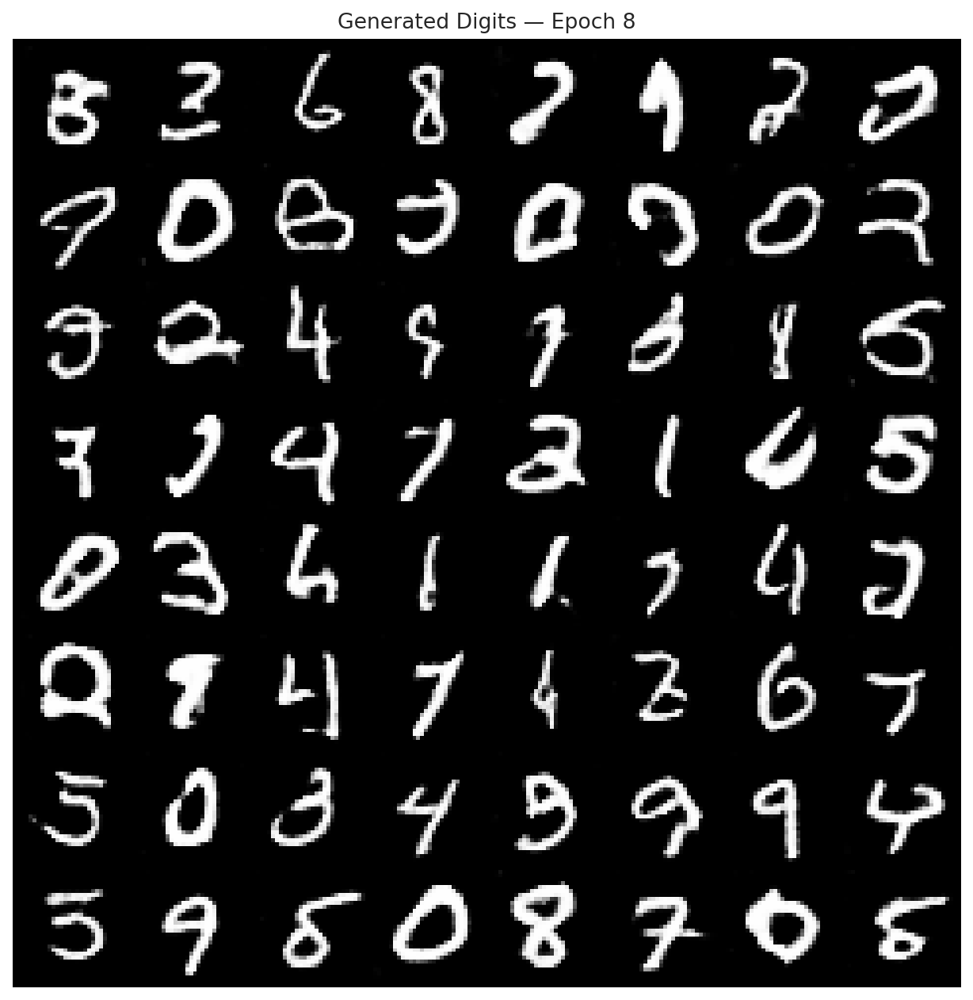
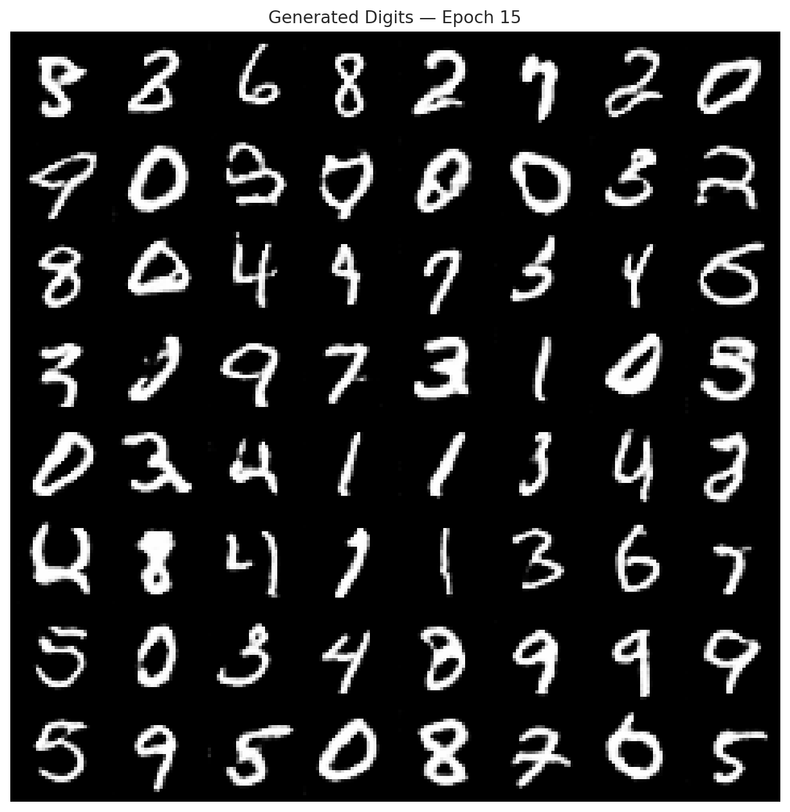

COMP-341L — Artificial Neural Networks Lab
Abstract— This lab implements a Generative Adversarial Network (GAN) in PyTorch to generate synthetic handwritten digits. The model is trained on MNIST (torchvision dataset fallback used in this run) with images normalized to the range [-1, 1] to match the generator’s tanh output. Training behavior is analyzed using generator/discriminator BCE loss curves and visual comparisons between real and generated digits. Generated samples are saved after each epoch to observe qualitative improvement.
Keywords— GAN, Generator, Discriminator, DCGAN, MNIST, Synthetic Data, PyTorch, BCE Loss.
In real-world applications, training data may be limited, which can lead to overfitting and poor generalization. Generative models provide a way to learn a data distribution and sample new synthetic examples. A Generative Adversarial Network (GAN) trains two models in competition: the generator (G) produces fake samples and the discriminator (D) attempts to distinguish real from fake. Over training, the generator learns to produce samples realistic enough to confuse the discriminator.
torchvision.datasets.MNIST (train set), image size =
28×28, channels = 1, normalization =
[-1, 1].
The notebook supports MNIST-in-CSV (Kaggle) and falls back to torchvision MNIST when Kaggle credentials are not available. Images are normalized to [-1, 1] because the generator uses a final tanh activation; this matching of ranges improves stability and avoids saturation at the output.
transform = transforms.Compose([
transforms.ToTensor(), # [0, 1]
transforms.Normalize((0.5,), (0.5,)) # -> [-1, 1]
])
GAN training can be written as a minimax optimization problem: the discriminator maximizes the probability of correctly labeling real and fake samples, while the generator minimizes it by producing realistic fakes. In practice, we use binary cross-entropy (BCE) losses to train both models.
log D(x) + log(1 − D(G(z)))−log D(G(z))
Unlike supervised learning, GAN losses may oscillate. Therefore, visual inspection of generated samples is essential to judge learning progress and detect issues such as mode collapse (low diversity) or discriminator dominance (vanishing generator gradients).
A DCGAN-style architecture is used because convolutional layers better capture spatial structure in images than simple MLPs. The generator uses transpose convolutions to upsample noise into a 28×28 digit, and the discriminator uses strided convolutions to downsample and classify.
| Network | Input | Output | Key idea |
|---|---|---|---|
| Generator (G) | z noise (latent vector) |
Fake image 1×28×28 |
Upsampling via ConvTranspose + BatchNorm + ReLU, final
tanh
|
| Discriminator (D) | Image 1×28×28 |
p(real) |
Downsampling via strided Conv + LeakyReLU, final
sigmoid
|
class Generator(nn.Module):
def __init__(self, z_dim):
super().__init__()
self.net = nn.Sequential(
nn.ConvTranspose2d(z_dim, 256, 7, 1, 0, bias=False), # 1x1 -> 7x7
nn.BatchNorm2d(256), nn.ReLU(True),
nn.ConvTranspose2d(256, 128, 4, 2, 1, bias=False), # 7x7 -> 14x14
nn.BatchNorm2d(128), nn.ReLU(True),
nn.ConvTranspose2d(128, 64, 4, 2, 1, bias=False), # 14x14 -> 28x28
nn.BatchNorm2d(64), nn.ReLU(True),
nn.Conv2d(64, 1, 3, 1, 1, bias=True),
nn.Tanh()
)class Discriminator(nn.Module):
def __init__(self):
super().__init__()
self.net = nn.Sequential(
nn.Conv2d(1, 64, 4, 2, 1), nn.LeakyReLU(0.2, inplace=True),
nn.Conv2d(64, 128, 4, 2, 1, bias=False), nn.BatchNorm2d(128),
nn.LeakyReLU(0.2, inplace=True),
nn.Conv2d(128, 256, 3, 2, 1, bias=False), nn.BatchNorm2d(256),
nn.LeakyReLU(0.2, inplace=True),
nn.Conv2d(256, 1, 4, 1, 0), nn.Sigmoid()
)15, batch size = 128, latent dim =
100, optimizer = Adam, lr =
2e-4, betas = (0.5, 0.999).0.8483, G =
2.1725.
Each batch performs two updates: (1) update the discriminator using real images (label=1) and generated images (label=0), and (2) update the generator to maximize the discriminator’s probability of labeling generated images as real (label=1). A fixed noise vector is used to save consistent sample grids after each epoch.
# --- Train Discriminator ---
valid = torch.ones(bsz, 1, device=device)
fake = torch.zeros(bsz, 1, device=device)
d_real = BCE(D(real_images), valid)
z = torch.randn(bsz, latent_dim, 1, 1, device=device)
gen_images = G(z)
d_fake = BCE(D(gen_images.detach()), fake)
d_loss = d_real + d_fake
d_loss.backward(); opt_D.step()
# --- Train Generator ---
z = torch.randn(bsz, latent_dim, 1, 1, device=device)
gen_images = G(z)
g_loss = BCE(D(gen_images), valid) # fool D
g_loss.backward(); opt_G.step()The loss curve provides insight into adversarial dynamics, but visual results are the primary evaluation. The figure below shows discriminator and generator losses across iterations. The real-vs-fake comparison shows the generator’s ability to produce digit-like patterns.





plots/task1_real_samples.png,
plots/task3_loss_curves.png,
plots/task4_real_vs_fake.png,
plots/task3_losses.csv, and
samples/epoch_###.png.
To further explore training behavior, the following experiments can be performed:
100 → 50 → 200 (tradeoff
between capacity and stability).
2e-4 → 1e-4 or
5e-4 (affects balance between G and D).
GAN training has known difficulties. If the discriminator becomes too strong, gradients provided to the generator shrink and learning slows or stalls. Another issue is mode collapse, where the generator produces limited varieties of digits. In practice, balancing learning rates, using stable architectures (e.g., DCGAN), and monitoring sample diversity help reduce these issues.
This lab successfully demonstrates adversarial training on handwritten digits using a GAN. The generator learns to synthesize digit-like images from random noise, and the discriminator learns to classify real and fake images. Loss curves and sample grids show the typical GAN dynamics and qualitative improvement across epochs. Synthetic generation can be used for data augmentation when training data is limited.
[1] I. Goodfellow et al., “Generative Adversarial Nets,” in
Advances in Neural Information Processing Systems, 2014.
[2] M. Heusel et al., “GANs Trained by a Two Time-Scale Update Rule
Converge to a Local Nash Equilibrium,” in NeurIPS, 2018.